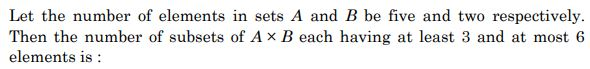
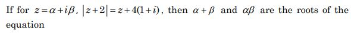
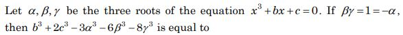
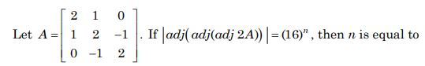
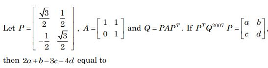
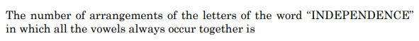
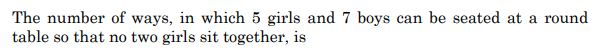
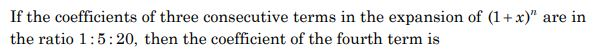
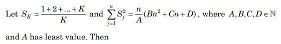
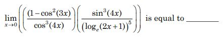

JEE Main 2023 (Session 2), 8 Apr Shift 1: worked solutions for review
Questions and options are NTA’s own images; the green option is NTA’s final key. Every solution below was written by Claude
and checked against NTA’s final key. It is not NTA’s solution. Please mark anything unclear or wrong.
Q1 · Mathematics · MCQ · ID 3666942931

Hint 1: How many elements does A × B have?
Hint 2: n(A × B) = 10. Count subsets of size 3, 4, 5 and 6.
What this tests: Cartesian product and counting subsets
1. A × B has 5 × 2 = 10 elements.
2. C(10,3) + C(10,4) + C(10,5) + C(10,6) = 120 + 210 + 252 + 210 = 792.
Answer: (1)
If this felt hard: Revise Sets and Permutations and Combinations.
Claude’s answer: 1 · NTA final key: 1 · agrees · Answer recomputed by script (tools/verify_pyq_solutions.py)
Q2 · Mathematics · MCQ · ID 3666942932

Hint 1: The left side |z + 2| is real. What does that force on the right side?
Hint 2: z + 4 + 4i must be real, so β = −4. Then |α + 2 − 4i| = α + 4.
What this tests: Modulus of a complex number
1. β = −4.
2. (α + 2)2 + 16 = (α + 4)2 gives α = 1 (and α + 4 > 0).
3. α + β = −3, αβ = −4: roots of x2 + 7x + 12 = 0.
Answer: (2)
If this felt hard: Comparing real and imaginary parts is the key step. Revise Complex Numbers.
Claude’s answer: 2 · NTA final key: 2 · agrees · Answer recomputed with SymPy (tools/verify_pyq_solutions.py)
Q3 · Mathematics · MCQ · ID 3666942933

Hint 1: α = −1 is a root. Use it together with the product of the roots.
Hint 2: αβγ = −c with βγ = 1 and α = −1 gives c = 1; then −1 − b + c = 0 gives b.
What this tests: Relations between roots and coefficients
1. c = 1 and b = 0, so the equation is x3 + 1 = 0.
2. Every root satisfies t3 = −1, so α3 = β3 = γ3 = −1.
3. b3 + 2c3 − 3α3 − 6β3 − 8γ3 = 0 + 2 + 3 + 6 + 8 = 19.
Answer: (3)
If this felt hard: Notice you never need β and γ themselves. Revise Quadratic Equations (cubic relations).
Claude’s answer: 3 · NTA final key: 3 · agrees · Answer recomputed with SymPy (tools/verify_pyq_solutions.py)
Q4 · Mathematics · MCQ · ID 3666942934

Hint 1: For a 3 × 3 matrix B, |adj B| = |B|2. Apply it three times.
Hint 2: |adj(adj(adj B))| = |B|8, and |2A| = 23|A|.
What this tests: Determinant of adjoint
1. |A| = 2(4 − 1) − 1(2 − 0) = 4, so |2A| = 32 = 25.
2. |adj(adj(adj 2A))| = (25)8 = 240 = 1610.
3. n = 10.
Answer: (1)
If this felt hard: A common slip is to forget that |kA| = k3|A| for 3 × 3. Revise Determinants.
Claude’s answer: 1 · NTA final key: 1 · agrees · Answer recomputed with SymPy (tools/verify_pyq_solutions.py)
Q5 · Mathematics · MCQ · ID 3666942935

Hint 1: Check whether P is orthogonal: what is PTP?
Hint 2: PTP = I, so PTQ2007P = A2007.
What this tests: Orthogonal matrices and powers
1. Q2007 = PA2007PT, so PTQ2007P = A2007.
2. An = [[1, n], [0, 1]], so a = 1, b = 2007, c = 0, d = 1.
3. 2a + b − 3c − 4d = 2 + 2007 − 0 − 4 = 2005.
Answer: (2)
If this felt hard: Revise Matrices (transpose, powers).
Claude’s answer: 2 · NTA final key: 2 · agrees · Answer recomputed with SymPy (tools/verify_pyq_solutions.py)
Q6 · Mathematics · MCQ · ID 3666942936

Hint 1: Count each letter. Treat all the vowels as one block.
Hint 2: Vowels: I, E, E, E, E. Consonants: N, N, N, D, D, P, C.
What this tests: Arrangements with repeated letters
1. Block + 7 consonants = 8 units: 8!/(3! 2!) = 3360.
2. Inside the block: 5!/4! = 5.
3. Total = 16800.
Answer: (3)
If this felt hard: Divide for repeated letters both outside and inside the block. Revise Permutations and Combinations.
Claude’s answer: 3 · NTA final key: 3 · agrees · Answer recomputed by script (tools/verify_pyq_solutions.py)
Q7 · Mathematics · MCQ · ID 3666942937

Hint 1: Seat the boys first round the table, then put girls in the gaps.
Hint 2: Boys: (7 − 1)! ways. 7 gaps; place 5 girls: P(7,5).
What this tests: Circular arrangements
1. 6! × 7 × 6 × 5 × 4 × 3 = 720 × 2520 = 1814400.
2. 126 × (5!)2 = 126 × 14400 = 1814400.
Answer: (1)
If this felt hard: Revise Permutations and Combinations.
Claude’s answer: 1 · NTA final key: 1 · agrees · Answer recomputed by script (tools/verify_pyq_solutions.py)
Q8 · Mathematics · MCQ · ID 3666942938

Hint 1: Use the ratio of consecutive binomial coefficients.
Hint 2: C(n,r)/C(n,r−1) = (n − r + 1)/r = 5 and C(n,r+1)/C(n,r) = (n − r)/(r + 1) = 4.
What this tests: Binomial coefficients
1. n + 1 = 6r and n = 5r + 4, so r = 5, n = 29.
2. Fourth term coefficient = C(29,3) = 3654.
Answer: (2)
If this felt hard: Revise Binomial Theorem.
Claude’s answer: 2 · NTA final key: 2 · agrees · Answer recomputed with SymPy (tools/verify_pyq_solutions.py)
Q9 · Mathematics · MCQ · ID 3666942939

Hint 1: Simplify SK first.
Hint 2: SK = (K + 1)/2, so Σ Sj2 = (1/4)Σk=2n+1 k2.
What this tests: Sums of squares
1. Sum = [(n + 1)(n + 2)(2n + 3) − 6]/24 = n(2n2 + 9n + 13)/24.
2. A = 24, B = 2, C = 9, D = 13.
3. A + B = 26 is divisible by D = 13. (Option 1: 48 not divisible by 5; option 3: 26 ≠ 20; option 4: 46 is divisible by 2.)
Answer: (2)
If this felt hard: Revise Sequences and Series (Σk2).
Claude’s answer: 2 · NTA final key: 2 · agrees · Answer recomputed with SymPy (tools/verify_pyq_solutions.py)
Q10 · Mathematics · MCQ · ID 3666942940

Hint 1: Use standard limits: sin t/t → 1, ln(1 + t)/t → 1, cos 0 = 1.
Hint 2: 1 − cos23x = sin23x ≈ 9x2; sin34x ≈ 64x3; (ln(1 + 2x))5 ≈ 32x5.
What this tests: Standard limits
1. Limit = 9 × 64/32 = 18.
Answer: (3)
If this felt hard: Revise Limits.
Claude’s answer: 3 · NTA final key: 3 · agrees · Answer recomputed with SymPy (tools/verify_pyq_solutions.py)
Q11 · Mathematics · MCQ · ID 3666942941
(1)
(2)
(3)
(4)
Hint 1: Multiply top and bottom by ex. What is d(xex)/dx?
Hint 2: Put t = xex, dt = ex(x + 1)dx: I = ∫ dt/(t(1 + t)2).
What this tests: Integration by substitution and partial fractions
1. 1/(t(1 + t)2) = 1/t − 1/(1 + t) − 1/(1 + t)2.
2. I = ln(t/(1 + t)) + 1/(1 + t) + C; as x → ∞, I → C, so C = 0.
3. At x = 1, t = e: I = 1 − ln(e + 1) + 1/(e + 1) = (e + 2)/(e + 1) − ln(e + 1).
Answer: (1)
If this felt hard: Spotting t = xex is the key. Revise Integrals.
Claude’s answer: 1 · NTA final key: 1 · agrees · Answer recomputed with SymPy (tools/verify_pyq_solutions.py)
Q12 · Mathematics · MCQ · ID 3666942942
(1)
(2)
(3)
(4)
Hint 1: Sketch y = x2, y = 8 − x2 and y = 7.
Hint 2: The parabolas meet at x = ±2; y = 8 − x2 is above 7 for |x| < 1.
What this tests: Area between curves
1. For |x| ≤ 1: ∫(7 − x2) dx = 40/3.
2. For 1 ≤ |x| ≤ 2: 2∫12(8 − 2x2) dx = 20/3.
3. Area = 60/3 = 20.
Answer: (2)
If this felt hard: Revise Application of Integrals.
Claude’s answer: 2 · NTA final key: 2 · agrees · Answer recomputed with SymPy (tools/verify_pyq_solutions.py)
Q13 · Mathematics · MCQ · ID 3666942943
(1)
(2)
(3)
(4)
Hint 1: Check the slopes: are two of the lines perpendicular?
Hint 2: 4x + 3y = 69 and 4y − 3x = 17 are perpendicular, so the circumcentre is the midpoint of the hypotenuse.
What this tests: Circumcentre of a right triangle
1. Other two vertices: (12, 7) and (5, 8).
2. Circumcentre (17/2, 15/2).
3. (α − β)2 + α + β = 1 + 16 = 17.
Answer: (3)
If this felt hard: Revise Straight Lines.
Claude’s answer: 3 · NTA final key: 3 · agrees · Answer recomputed with SymPy (tools/verify_pyq_solutions.py)
Q14 · Mathematics · MCQ · ID 3666942944
(1)
(2)
(3)
(4)
Hint 1: Take P and Q as (5t2, 10t). Use the centroid.
Hint 2: Focus R = (5, 0). Centroid: 10(t1 + t2) = 30 and 5(t12 + t22) + 5 = 30.
What this tests: Parametric points on a parabola
1. t1 + t2 = 3, t12 + t22 = 5, so t1, t2 = 1, 2.
2. P(5, 10), Q(20, 20); slope 2/3 and c = 20/3, so c − m = 6 checks.
3. PQ2 = 225 + 100 = 325.
Answer: (2)
If this felt hard: Revise Conic Sections (parabola).
Claude’s answer: 2 · NTA final key: 2 · agrees · Answer recomputed with SymPy (tools/verify_pyq_solutions.py)
Q15 · Mathematics · MCQ · ID 3666942945
(1)
(2)
(3)
(4)
Hint 1: Plane through the line: P1 + λP2 = 0. The given plane's normal is the cross product of its two direction vectors.
Hint 2: Normal of the given plane: (1, 1, 1) × (1, −2, 3) = (5, −2, −3).
What this tests: Planes through a line
1. Normal (1 + 2λ, 2 + λ, 3 − λ)·(5, −2, −3) = 11λ − 8 = 0, λ = 8/11.
2. Plane: 27x + 30y + 25z = 4.
3. a − b + c = 27 − 30 + 25 = 22.
Answer: (3)
If this felt hard: Revise Three Dimensional Geometry.
Claude’s answer: 3 · NTA final key: 3 · agrees · Answer recomputed with SymPy (tools/verify_pyq_solutions.py)
Q16 · Mathematics · MCQ · ID 3666942946
(1)
(2)
(3)
(4)
Hint 1: Use the shortest distance formula for skew lines.
Hint 2: SD = |(a2 − a1)·(d1 × d2)|/|d1 × d2|.
What this tests: Shortest distance between skew lines
1. d1 × d2 = (4, 5, 3) × (3, 4, 2) = (−2, 1, 1), |.| = √6.
2. a2 − a1 = (−3, 5, 7); dot = 18.
3. SD = 18/√6 = 3√6.
Answer: (2)
If this felt hard: Revise Three Dimensional Geometry.
Claude’s answer: 2 · NTA final key: 2 · agrees · Answer recomputed with SymPy (tools/verify_pyq_solutions.py)
Q17 · Mathematics · MCQ · ID 3666942947
(1)
(2)
(3)
(4)
Hint 1: Collinear means BC is a multiple of AB.
Hint 2: AB = (6 − α, 1, −2), BC = (−3/2, β − 11, −19).
What this tests: Collinear points
1. BC = (19/2)AB from the z-components.
2. β − 11 = 19/2, so β = 41/2; 6 − α = −3/19, so α = 117/19.
3. 19α − 6β = 117 − 123 = −6; square 36.
Answer: (3)
If this felt hard: Revise Vector Algebra.
Claude’s answer: 3 · NTA final key: 3 · agrees · Answer recomputed with SymPy (tools/verify_pyq_solutions.py)
Q18 · Mathematics · MCQ · ID 3666942948
(1)
(2)
(3)
(4)
Hint 1: This is Bayes' theorem.
Hint 2: P(C | D) = P(C)P(D | C)/Σ P(machine)P(D | machine).
What this tests: Bayes' theorem
1. P(D) = 0.2 × 0.03 + 0.3 × 0.04 + 0.5 × 0.02 = 0.028.
2. P(C | D) = 0.010/0.028 = 5/14.
Answer: (2)
If this felt hard: Revise Probability.
Claude’s answer: 2 · NTA final key: 2 · agrees · Answer recomputed by script (tools/verify_pyq_solutions.py)
Q19 · Mathematics · MCQ · ID 3666942949
(1)
(2)
(3)
(4)
Hint 1: Write sin x ± cos x as √2 times a single sine or cosine of θ = x − π/4.
Hint 2: f = (cos θ − 1)/sin θ = −tan(θ/2).
What this tests: Second derivatives with trigonometric simplification
1. At x = 7π/12, θ = π/3: f = −tan(π/6) = −1/√3.
2. f'' = −(1/2)sec2(θ/2) tan(θ/2) = −(1/2)(4/3)(1/√3) = −2/(3√3).
3. Product = 2/9.
Answer: (4)
If this felt hard: Simplifying before differentiating saves a lot of work. Revise Continuity and Differentiability.
Claude’s answer: 4 · NTA final key: 4 · agrees · Answer recomputed with SymPy (tools/verify_pyq_solutions.py)
Q20 · Mathematics · MCQ · ID 3666942950
(1)
(2)
(3)
(4)
Hint 1: Simplify using p ⇒ q ≡ ∼p ∨ q.
Hint 2: (p ⇒ q) ⇒ (q ⇒ p) ≡ (p ∧ ∼q) ∨ ∼q ∨ p ≡ p ∨ ∼q.
What this tests: Negation of implications
1. The statement is p ∨ ∼q.
2. Its negation is ∼p ∧ q = q ∧ (∼p).
Answer: (3)
If this felt hard: Revise Mathematical Reasoning.
Claude’s answer: 3 · NTA final key: 3 · agrees · Answer recomputed by script (tools/verify_pyq_solutions.py)
Note: Mathematical reasoning is no longer in the JEE Main syllabus.
Q21 · Mathematics · Numerical · ID 3666942951
Hint 1: For symmetry you must add (y, x) for every (x, y) in R. Does R already contain any reversed pair?
Hint 2: Every pair in R has x > y, so no reverse is present: the answer is |R|.
What this tests: Symmetric relations
1. Odd positive differences (one odd, one even, x > y): 3 − 0; 7 − 0, 4, 6; 9 − 0, 4, 6, 8; 4 − 3; 6 − 3; 8 − 3, 7; 10 − 3, 7, 9: 15 pairs.
2. x − y = 2: (6, 4), (8, 6), (10, 8), (9, 7): 4 pairs.
3. Add 19 reversed pairs.
Answer: 19
If this felt hard: List pairs carefully; a missed pair is the usual slip. Revise Relations and Functions.
Claude’s answer: 19 · NTA final key: 19 · agrees · Answer recomputed by script (tools/verify_pyq_solutions.py)
Q22 · Mathematics · Numerical · ID 3666942952
Hint 1: Find r for which the power of x is 0.
Hint 2: Tr+1 = C(7,r)(3x2)7−r(−1/(2x5))r; power 14 − 7r = 0.
What this tests: Constant term in a binomial expansion
1. r = 2: C(7,2) × 35 × 1/4 = 21 × 243/4 = 1275.75.
2. [α] = 1275.
Answer: 1275
If this felt hard: Revise Binomial Theorem.
Claude’s answer: 1275 · NTA final key: 1275 · agrees · Answer recomputed with SymPy (tools/verify_pyq_solutions.py)
Q23 · Mathematics · Numerical · ID 3666942953
Hint 1: Treat an as f(x) = x3/(x4 + 147) and find where it is largest.
Hint 2: f'(x) has the sign of x2(441 − x4); maximum at x = √21 ≈ 4.58.
What this tests: Greatest term of a sequence
1. Compare n = 4 and n = 5: a4 = 64/403 ≈ 0.159, a5 = 125/772 ≈ 0.162.
2. a5 is the greatest.
Answer: 5
If this felt hard: Remember to test the integers on both sides of the real maximum. Revise Application of Derivatives.
Claude’s answer: 5 · NTA final key: 5 · agrees · Answer recomputed with SymPy (tools/verify_pyq_solutions.py)
Q24 · Mathematics · Numerical · ID 3666942954
Hint 1: Find [cosec x] and [cot x] on each part of (π/6, 5π/6).
Hint 2: [cosec x] = 1 throughout. [cot x] = 1, 0, −1, −2 on (π/6, π/4), (π/4, π/2), (π/2, 3π/4), (3π/4, 5π/6).
What this tests: Definite integrals of greatest-integer functions
1. ∫ 8[cosec x] dx = 8 × 2π/3 = 16π/3.
2. ∫[cot x] dx = π/12 − π/4 − π/6 = −π/3.
3. Integral = 16π/3 + 5π/3 = 7π; times 2/π gives 14.
Answer: 14
If this felt hard: Split the interval where the function crosses integers. Revise Definite Integrals.
Claude’s answer: 14 · NTA final key: 14 · agrees · Answer recomputed with SymPy (tools/verify_pyq_solutions.py)
Q25 · Mathematics · Numerical · ID 3666942955
Hint 1: Rewrite as a linear equation in y. Note loge x2 = 2 ln x.
Hint 2: dy/dx + y/(2x ln x) = 1/x, with integrating factor √(ln x).
What this tests: Linear differential equations
1. y√(ln x) = (2/3)(ln x)3/2 + C.
2. At (e, 4/3): C = 2/3.
3. At x = e4: 2α = 16/3 + 2/3 = 6, so α = 3.
Answer: 3
If this felt hard: Revise Differential Equations.
Claude’s answer: 3 · NTA final key: 3 · agrees · Answer recomputed with SymPy (tools/verify_pyq_solutions.py)
Q26 · Mathematics · Numerical · ID 3666942956
Hint 1: Count multiples of 3, 9, 27, … up to 66 (Legendre's formula).
Hint 2: [66/3] + [66/9] + [66/27] + [66/81].
What this tests: Highest power of a prime in n!
1. 22 + 7 + 2 + 0 = 31.
Answer: 31
If this felt hard: Revise Permutations and Combinations.
Claude’s answer: 31 · NTA final key: 31 · agrees · Answer recomputed by script (tools/verify_pyq_solutions.py)
Q27 · Mathematics · Numerical · ID 3666942957
Hint 1: The mirror image of a circle has the same radius; its centre is the image of C1's centre.
Hint 2: C1: centre (2, 1), r2 = α. Reflect (2, 1) in 2x − y + 1 = 0.
What this tests: Image of a circle in a line
1. Image of (2, 1): (−6/5, 13/5), so f = −6/5, g = 13/5.
2. r2 = f2 + g2 − 36/5 = 205/25 − 180/25 = 1, so r = 1.
3. α = r2 = 1; α + r = 2.
Answer: 2
If this felt hard: Revise Circles and Straight Lines (image of a point).
Claude’s answer: 2 · NTA final key: 2 · agrees · Answer recomputed with SymPy (tools/verify_pyq_solutions.py)
Q28 · Mathematics · Numerical · ID 3666942958
Hint 1: Equal distances: compare |2x + 3y − 6z + 7| for the two points.
Hint 2: For (−2, 0, 1) it is 3; for (5/2, 1, λ) it is |15 − 6λ|.
What this tests: Distances from a plane and a line
1. |15 − 6λ| = 3 gives λ = 3, 2; so the point is (1, 2, 3).
2. From (5, 1, −7): AP = (−4, 1, 10), |AP|2 = 117; projection on (1, 2, 2)/3 is 6.
3. Distance2 = 117 − 36 = 81, distance 9.
Answer: 9
If this felt hard: Revise Three Dimensional Geometry.
Claude’s answer: 9 · NTA final key: 9 · agrees · Answer recomputed with SymPy (tools/verify_pyq_solutions.py)
Q29 · Mathematics · Numerical · ID 3666942959
Hint 1: a × (c − b) = 0 means c − b is parallel to a.
Hint 2: c = b + ta. Note a·(i − 2j + k) = 0.
What this tests: Vector products
1. c·(1, −2, 1) = b·(1, −2, 1) = α − 24 = 5, so α = 29.
2. a·c = a·b + 261t = 249 + 261t = −12, so t = −1.
3. c = b − a = (23, 2, −14); c·(1, 1, 1) = 11.
Answer: 11
If this felt hard: Revise Vector Algebra.
Claude’s answer: 11 · NTA final key: 11 · agrees · Answer recomputed with SymPy (tools/verify_pyq_solutions.py)
Q30 · Mathematics · Numerical · ID 3666942960
Hint 1: Use the mean to get x + y and the variance to get x2 + y2.
Hint 2: x + y + 52 = 72; Σx2/8 − 81 = 9.25.
What this tests: Mean and variance
1. x + y = 20.
2. Σx2 = 722, known squares 504, so x2 + y2 = 218 and xy = 91.
3. x = 13, y = 7; 3x − 2y = 25.
Answer: 25
If this felt hard: Revise Statistics.
Claude’s answer: 25 · NTA final key: 25 · agrees · Answer recomputed with SymPy (tools/verify_pyq_solutions.py)
Q31 · Physics · MCQ · ID 3666942961
(1)
(2)
(3)
(4)
Hint 1: Is there any relative motion between the whistle and the passenger?
Hint 2: Source and listener move together.
What this tests: Doppler effect
1. No relative motion, so no Doppler shift: 400 Hz.
Answer: (4)
If this felt hard: Revise Waves.
Claude’s answer: 4 · NTA final key: 4 · agrees · Answer recomputed by script (tools/verify_pyq_solutions.py)
Q32 · Physics · MCQ · ID 3666942962
(1)
(2)
(3)
(4)
Hint 1: Temperature is the same, so use Boyle's law.
Hint 2: Pbottom = P0 + ρgh.
What this tests: Pressure in liquids and Boyle's law
1. Pbottom = 105 + 1000 × 10 × 40 = 5 × 105 Pa.
2. V = 5 × 1 = 5 cm3.
Answer: (4)
If this felt hard: Revise Mechanical Properties of Fluids.
Claude’s answer: 4 · NTA final key: 4 · agrees · Answer recomputed by script (tools/verify_pyq_solutions.py)
Q33 · Physics · MCQ · ID 3666942963
(1)
(2)
(3)
(4)
Hint 1: Can heat be added without a rise in temperature?
Hint 2: Think of melting or isothermal expansion. Work = ∫P dV.
What this tests: First law of thermodynamics
1. Statement I is false (e.g. melting, isothermal expansion).
2. Statement II is true: W = ∫P dV > 0 needs the volume to increase.
Answer: (4)
If this felt hard: Revise Thermodynamics.
Claude’s answer: 4 · NTA final key: 4 · agrees · Theory question: not computable, needs a teacher’s review
Note: Teacher look: in a cyclic process positive net work is done with no net volume change; NTA treats II as true for a single expansion-type process.
Q34 · Physics · MCQ · ID 3666942964
(1)
(2)
(3)
(4)
Hint 1: Energy per unit volume = (1/2) × stress × strain.
Hint 2: u = (1/2)Y(strain)2.
What this tests: Elastic potential energy
1. Strain = 4 × 10−4.
2. u = 0.5 × 7 × 1010 × 16 × 10−8 = 5600 J/m3.
Answer: (2)
If this felt hard: Change 0.04% to 4 × 10−4. Revise Mechanical Properties of Solids.
Claude’s answer: 2 · NTA final key: 2 · agrees · Answer recomputed by script (tools/verify_pyq_solutions.py)
Q35 · Physics · MCQ · ID 3666942965
(1)
(2)
(3)
(4)
Hint 1: Write KE, PE and E for a circular orbit.
Hint 2: KE = GMm/2r, PE = −GMm/r, E = −GMm/2r.
What this tests: Energy of a satellite
1. PE = 2E, not E/2: Statement I incorrect.
2. KE = |E|, not |E|/2: Statement II incorrect.
Answer: (2)
If this felt hard: Revise Gravitation.
Claude’s answer: 2 · NTA final key: 2 · agrees · Theory question: not computable, needs a teacher’s review
Q36 · Physics · MCQ · ID 3666942966
(1)
(2) 
(3)
(4)
Hint 1: Find acceleration by differentiating velocity.
Hint 2: a = (2, 6t); F = ma.
What this tests: Newton's second law
1. At t = 1: a = (2, 6).
2. F = 0.5 × (2, 6) = (1, 3): x = 3.
Answer: (3)
If this felt hard: Use m = 0.5 kg. Revise Laws of Motion.
Claude’s answer: 3 · NTA final key: 3 · agrees · Answer recomputed by script (tools/verify_pyq_solutions.py)
Q37 · Physics · MCQ · ID 3666942967
(1)
(2)
(3)
(4)
Hint 1: Perpendicular forces add like the sides of a right triangle.
Hint 2: R = √(A2 + (A/2)2).
What this tests: Vector addition
1. R = A√(5/4) = √5A/2.
Answer: (2)
If this felt hard: Revise Motion in a Plane (vectors).
Claude’s answer: 2 · NTA final key: 2 · agrees · Answer recomputed by script (tools/verify_pyq_solutions.py)
Q38 · Physics · MCQ · ID 3666942968
(1)
(2)
(3)
(4)
Hint 1: How does g change with depth d?
Hint 2: gd = g(1 − d/R).
What this tests: Variation of g with depth
1. d = R/2: g halves, so weight = 200 N.
Answer: (3)
If this felt hard: Revise Gravitation.
Claude’s answer: 3 · NTA final key: 3 · agrees · Answer recomputed by script (tools/verify_pyq_solutions.py)
Q39 · Physics · MCQ · ID 3666942969
(1)
(2)
(3)
(4)
Hint 1: Range R = u2 sin 2θ/g.
Hint 2: sin 60° = sin 120°.
What this tests: Projectile range
1. RA : RB = 402 : 602 = 4 : 9.
Answer: (3)
If this felt hard: Revise Motion in a Plane.
Claude’s answer: 3 · NTA final key: 3 · agrees · Answer recomputed by script (tools/verify_pyq_solutions.py)
Q40 · Physics · MCQ · ID 3666942970
(1)
(2)
(3)
(4)
Hint 1: ρ = m/(πr2L). Add the relative errors.
Hint 2: Δρ/ρ = Δm/m + 2Δr/r + ΔL/L.
What this tests: Propagation of errors
1. 0.01/0.4 + 2 × 0.03/6 + 0.04/8 = 0.025 + 0.01 + 0.005 = 0.04.
2. 4%.
Answer: (3)
If this felt hard: Remember the factor 2 for r2. Revise Units and Measurements.
Claude’s answer: 3 · NTA final key: 3 · agrees · Answer recomputed by script (tools/verify_pyq_solutions.py)
Q41 · Physics · MCQ · ID 3666942971
(1)
(2)
(3)
(4)
Hint 1: Range of an antenna: d = √(2Rh). Area covered = πd2.
Hint 2: πd2 = 2πRh.
What this tests: Range of a TV antenna
1. 2π × 6400 × 0.098 km2 ≈ 3941 km2 ≈ 3942 km2.
Answer: (3)
If this felt hard: Revise Communication Systems.
Claude’s answer: 3 · NTA final key: 3 · agrees · Answer recomputed by script (tools/verify_pyq_solutions.py)
Note: Communication systems is no longer in the JEE Main syllabus.
Q42 · Physics · MCQ · ID 3666942972
(1)
(2)
(3)
(4)
Hint 1: Each input goes through a NAND used as NOT; then a NAND. What single gate is that?
Hint 2: NAND(Ā, B̄) = A + B (De Morgan).
What this tests: Logic gates
1. Y = A OR B.
2. A is 1 from t = 2; B is 1 for 1–2 and 3–4.
3. Y = 0 before t = 1 and 1 from t = 1 onward.
Answer: (1)
If this felt hard: Revise Semiconductor Electronics (De Morgan's theorem).
Claude’s answer: 1 · NTA final key: 1 · agrees · Answer recomputed by script (tools/verify_pyq_solutions.py)
Note: Figure reading: the first two gates are NANDs with joined inputs (NOT gates).
Q43 · Physics · MCQ · ID 3666942973
(1)
(2)
(3)
(4)
Hint 1: Recall the terms of the liquid-drop (semi-empirical) binding energy.
Hint 2: Volume term ∝ A; surface term ∝ A2/3 (total, ∝ surface area); Coulomb term ∝ Z(Z − 1)/A1/3.
What this tests: Liquid drop model of the nucleus
1. A false: −a1A2/3 is the total surface energy, not per nucleon.
2. B false: the Coulomb term has A1/3 in the denominator.
3. C and D true. E false.
Answer: (3)
If this felt hard: Revise Nuclei (binding energy).
Claude’s answer: 3 · NTA final key: 3 · agrees · Theory question: not computable, needs a teacher’s review
Note: Teacher look: goes beyond NCERT; B would be correct as a per-nucleon expression.
Q44 · Physics · MCQ · ID 3666942974
(1)
(2)
(3)
(4)
Hint 1: de Broglie λ = h/p. What must be equal?
Hint 2: Same λ means same p.
What this tests: de Broglie wavelength
1. pP : pe = 1 : 1 (mass does not matter).
Answer: (4)
If this felt hard: Revise Dual Nature of Radiation and Matter.
Claude’s answer: 4 · NTA final key: 4 · agrees · Theory question: not computable, needs a teacher’s review
Q45 · Physics · MCQ · ID 3666942975
(1)
(2)
(3)
(4)
Hint 1: Where would the image form without the secondary mirror?
Hint 2: Inside the tube, at the focus of the primary mirror.
What this tests: Reflecting telescope
1. The secondary mirror reflects the light out so the eyepiece can sit outside the tube.
Answer: (2)
If this felt hard: Revise Ray Optics.
Claude’s answer: 2 · NTA final key: 2 · agrees · Theory question: not computable, needs a teacher’s review
Q46 · Physics · MCQ · ID 3666942976
(1)
(2)
(3)
(4)
Hint 1: Relate μ0ε0 to the speed of light.
Hint 2: c = 1/√(μ0ε0).
What this tests: Dimensions
1. 1/(μ0ε0) = c2: L2/T2.
Answer: (3)
If this felt hard: Revise Electromagnetic Waves.
Claude’s answer: 3 · NTA final key: 3 · agrees · Theory question: not computable, needs a teacher’s review
Q47 · Physics · MCQ · ID 3666942977
(1)
(2)
(3)
(4)
Hint 1: A moving coil on a metal frame: what currents form in the frame?
Hint 2: Eddy currents oppose the motion.
What this tests: Eddy current damping
1. Eddy currents damp the motion and bring the coil to rest quickly.
Answer: (4)
If this felt hard: Revise Electromagnetic Induction.
Claude’s answer: 4 · NTA final key: 4 · agrees · Theory question: not computable, needs a teacher’s review
Q48 · Physics · MCQ · ID 3666942978
(1)
(2)
(3)
(4)
Hint 1: Topic: Helical motion. Which rule or fact from it settles this question?
Hint 2: The parallel component is unaffected; the perpendicular one makes a circle.
What this tests: Helical motion
1. Circle + uniform drift along B: a helix with its axis along B.
Answer: (3)
If this felt hard: Revise Moving Charges and Magnetism.
Claude’s answer: 3 · NTA final key: 3 · agrees · Theory question: not computable, needs a teacher’s review
Q49 · Physics · MCQ · ID 3666942979
(1)
(2)
(3)
(4)
Hint 1: In steady DC, capacitors carry no current. Which path does the current take?
Hint 2: A → 6 Ω → B → G (2 Ω) → C → 8 Ω → D: total 16 Ω.
What this tests: Capacitors in DC circuits
1. I = 4/16 = 0.25 A: drops 1.5 V, 0.5 V, 2 V.
2. C1 (A to C): 1.5 + 0.5 = 2 V. C2 (B to D): 0.5 + 2 = 2.5 V.
3. Ratio 2/2.5 = 4/5.
Answer: (1)
If this felt hard: Revise Current Electricity and Capacitance.
Claude’s answer: 1 · NTA final key: 1 · agrees · Answer recomputed with SymPy (tools/verify_pyq_solutions.py)
Note: Figure reading: 6 Ω on AB, C_{2} on BD, C_{1} on AC, 8 Ω on CD, G between B and C.
Q50 · Physics · MCQ · ID 3666942980
(1)
(2)
(3)
(4)
Hint 1: Use Gauss's law inside and outside a uniformly charged solid sphere.
Hint 2: Inside E ∝ r; outside E ∝ 1/r2.
What this tests: Field of a charged sphere
1. Linear rise to r = R, then 1/r2 fall: graph 1.
Answer: (1)
If this felt hard: Revise Electric Charges and Fields.
Claude’s answer: 1 · NTA final key: 1 · agrees · Theory question: not computable, needs a teacher’s review
Q51 · Physics · Numerical · ID 3666942981
Hint 1: For an open pipe, fn = nv/(2L).
Hint 2: n = 2, L = 0.4 m.
What this tests: Open organ pipe
1. f = 2 × 360/0.8 = 900 Hz.
Answer: 900
If this felt hard: Revise Waves.
Claude’s answer: 900 · NTA final key: 900 · agrees · Answer recomputed by script (tools/verify_pyq_solutions.py)
Q52 · Physics · Numerical · ID 3666942982
Hint 1: At steady speed the upthrust balances the viscous drag (air weight neglected).
Hint 2: 6πηrv = (4/3)πr3ρg, so η = 2r2ρg/(9v).
What this tests: Stokes' law
1. r = 3 × 10−3 m, v = 3.5 × 10−3 m/s.
2. η = 2 × 9 × 10−6 × 1750 × 10/(9 × 3.5 × 10−3) = 10 Pa s.
Answer: 10
If this felt hard: Use the radius, not the diameter. Revise Mechanical Properties of Fluids.
Claude’s answer: 10 · NTA final key: 10 · agrees · Answer recomputed by script (tools/verify_pyq_solutions.py)
Q53 · Physics · Numerical · ID 3666942983
Hint 1: Every bit of the semicircular ring is at distance R from the axis.
Hint 2: I = Σmr2 = MR2.
What this tests: Moment of inertia
1. I = MR2, so x = 1.
Answer: 1
If this felt hard: Revise System of Particles and Rotational Motion.
Claude’s answer: 1 · NTA final key: 1 · agrees · Theory question: not computable, needs a teacher’s review
Q54 · Physics · Numerical · ID 3666942984
Hint 1: KE = p2/2m.
Hint 2: KE ∝ p2.
What this tests: Momentum and kinetic energy
1. (1.5)2 = 2.25: increase 125%.
Answer: 125
If this felt hard: Revise Work, Energy and Power.
Claude’s answer: 125 · NTA final key: 125 · agrees · Answer recomputed by script (tools/verify_pyq_solutions.py)
Q55 · Physics · Numerical · ID 3666942985
Hint 1: Gain = BE after − BE before.
Hint 2: 2 × 121 × 8.1 − 242 × 7.6.
What this tests: Binding energy in fission
1. 242 × (8.1 − 7.6) = 121 MeV.
Answer: 121
If this felt hard: Revise Nuclei.
Claude’s answer: 121 · NTA final key: 121 · agrees · Answer recomputed by script (tools/verify_pyq_solutions.py)
Q56 · Physics · Numerical · ID 3666942986
Hint 1: List the images behind A: direct, and via B.
Hint 2: Direct: 2 cm behind A. Via B: B's image is 8 cm behind B, i.e. 18 cm from A.
What this tests: Multiple images in parallel mirrors
1. Images behind A: 2 cm, 18 cm, 22 cm, …
2. Second nearest: 18 cm.
Answer: 18
If this felt hard: Revise Ray Optics.
Claude’s answer: 18 · NTA final key: 18 · agrees · Answer recomputed by script (tools/verify_pyq_solutions.py)
Q57 · Physics · Numerical · ID 3666942987
Hint 1: Energy is conserved between the capacitor and the inductor.
Hint 2: Imax = Qmax/√(LC).
What this tests: LC oscillations
1. √(LC) = √(75 × 10−3 × 1.2 × 10−6) = 3 × 10−4 s.
2. I = 2.7 × 10−6/3 × 10−4 = 9 mA.
Answer: 9
If this felt hard: Revise Alternating Current.
Claude’s answer: 9 · NTA final key: 9 · agrees · Answer recomputed by script (tools/verify_pyq_solutions.py)
Q58 · Physics · Numerical · ID 3666942988
Hint 1: Magnetic intensity inside a long solenoid: H = nI.
Hint 2: n = 8 per cm = 800 per m.
What this tests: Solenoid
1. I = 1600/800 = 2 A.
Answer: 2
If this felt hard: Revise Magnetism and Matter.
Claude’s answer: 2 · NTA final key: 2 · agrees · Answer recomputed by script (tools/verify_pyq_solutions.py)
Q59 · Physics · Numerical · ID 3666942989
Hint 1: I = neAvd.
Hint 2: Area 25 mm2 = 25 × 10−6 m2.
What this tests: Drift velocity
1. vd = 2/(2 × 1028 × 1.6 × 10−19 × 25 × 10−6) = 2.5 × 10−5 m/s = 25 × 10−6.
Answer: 25
If this felt hard: Revise Current Electricity.
Claude’s answer: 25 · NTA final key: 25 · agrees · Answer recomputed by script (tools/verify_pyq_solutions.py)
Q60 · Physics · Numerical · ID 3666942990
Hint 1: Work = change in potential energy U = −pE cos θ.
Hint 2: From θ = 0 to 180°: W = 2pE.
What this tests: Dipole in a uniform field
1. W = 2 × 6 × 10−6 × 1.5 × 103 = 1.8 × 10−2 J = 18 mJ.
Answer: 18
If this felt hard: Revise Electric Charges and Fields.
Claude’s answer: 18 · NTA final key: 18 · agrees · Answer recomputed by script (tools/verify_pyq_solutions.py)
Q61 · Chemistry · MCQ · ID 3666942991
(1)
(2)
(3)
(4)
Hint 1: Balance iodine atoms.
Hint 2: 2 + x = 12.
What this tests: Balancing redox equations
1. x = 10 (charges also balance: −2 − 10 + 12 = 0).
Answer: (2)
If this felt hard: Revise Redox Reactions.
Claude’s answer: 2 · NTA final key: 2 · agrees · Answer recomputed by script (tools/verify_pyq_solutions.py)
Q62 · Chemistry · MCQ · ID 3666942992
(1)
(2)
(3)
(4)
Hint 1: Which half-reaction happens at each electrode?
Hint 2: Anode: H2 → H+. Cathode: AgCl + e− → Ag + Cl−.
What this tests: Galvanic cells
1. Pt | H2(g) | HCl(sol) | AgCl(s) | Ag.
Answer: (3)
If this felt hard: Revise Electrochemistry.
Claude’s answer: 3 · NTA final key: 3 · agrees · Theory question: not computable, needs a teacher’s review
Q63 · Chemistry · MCQ · ID 3666942993
(1)
(2)
(3)
(4)
Hint 1: Freundlich: x/m = kp1/n. What graphs does this give?
Hint 2: log(x/m) = log k + (1/n) log p.
What this tests: Freundlich adsorption isotherm
1. A: curve rising and flattening: yes.
2. B: straight log–log line with intercept log k: yes.
3. D: x/m against p1/n through the origin: yes. C: no.
Answer: (3)
If this felt hard: Revise Surface Chemistry.
Claude’s answer: 3 · NTA final key: 3 · agrees · Theory question: not computable, needs a teacher’s review
Note: Surface chemistry is no longer in the JEE Main syllabus.
Q64 · Chemistry · MCQ · ID 3666942994
(1)
(2)
(3)
(4)
Hint 1: Recall Pauling values.
Hint 2: Br ≈ 2.8–3.0, C 2.5, At ≈ 2.2, P 2.1–2.2.
What this tests: Electronegativity
1. Br > C > At > P.
Answer: (2)
If this felt hard: Revise Classification of Elements.
Claude’s answer: 2 · NTA final key: 2 · agrees · Theory question: not computable, needs a teacher’s review
Note: Teacher look: At (2.2) and P (2.19) are very close on the Pauling scale; NTA places At above P.
Q65 · Chemistry · MCQ · ID 3666942995
(1)
(2)
(3)
(4)
Hint 1: Which metal's oxide is amphoteric and dissolves in alkali?
Hint 2: Tin's oxide SnO2 dissolves in alkali as stannate.
What this tests: Leaching in metallurgy
1. Sn can be leached with alkali.
2. Au is leached with cyanide; Cu and Pb are not alkali-leached.
Answer: (4)
If this felt hard: Revise General Principles of Isolation of Elements.
Claude’s answer: 4 · NTA final key: 4 · agrees · Theory question: not computable, needs a teacher’s review
Note: Teacher look: not in NCERT's leaching examples (bauxite with NaOH; Au/Ag with NaCN). Metallurgy is no longer in the JEE Main syllabus.
Q66 · Chemistry · MCQ · ID 3666942996
(1)
(2)
(3)
(4)
Hint 1: What does CO + H2 give over a cobalt catalyst (NCERT)?
Hint 2: CO + 2H2 → CH3OH.
What this tests: Uses of water gas
1. Methanol.
Answer: (2)
If this felt hard: Revise Hydrogen (NCERT).
Claude’s answer: 2 · NTA final key: 2 · agrees · Theory question: not computable, needs a teacher’s review
Q67 · Chemistry · MCQ · ID 3666942997
(1)
(2)
(3)
(4)
Hint 1: Topic: Cement. Which rule or fact from it settles this question?
Hint 2: Why is a little gypsum ground with clinker?
What this tests: Cement
1. Gypsum slows down the setting of cement.
Answer: (3)
If this felt hard: Revise everyday chemistry (cement).
Claude’s answer: 3 · NTA final key: 3 · agrees · Theory question: not computable, needs a teacher’s review
Note: Not in the current syllabus.
Q68 · Chemistry · MCQ · ID 3666942998
(1)
(2)
(3)
(4)
Hint 1: Think of the diagonal relationship of Li and Mg.
Hint 2: Li+ 76 pm, Mg2+ 72 pm.
What this tests: Diagonal relationship
1. Neither Li nor Mg forms a superoxide: I correct.
2. Li+ is slightly larger than Mg2+: II correct.
Answer: (1)
If this felt hard: Revise The s-Block Elements.
Claude’s answer: 1 · NTA final key: 1 · agrees · Theory question: not computable, needs a teacher’s review
Q69 · Chemistry · MCQ · ID 3666942999
(1)
(2)
(3)
(4)
Hint 1: Which halide is a strong enough reductant to reduce Cu2+ to Cu+?
Hint 2: 2Cu2+ + 4I− → Cu2I2 + I2.
What this tests: Copper(II) and iodide
1. Only iodide does this.
Answer: (2)
If this felt hard: Revise The d- and f-Block Elements.
Claude’s answer: 2 · NTA final key: 2 · agrees · Theory question: not computable, needs a teacher’s review
Q70 · Chemistry · MCQ · ID 3666943000
(1)
(2)
(3)
(4)
Hint 1: Find the d-electron count and whether the ligands pair the electrons.
Hint 2: Co3+ is d6; CN− is a strong-field ligand.
What this tests: Crystal field theory
1. [Co(CN)6]3−: t2g6, diamagnetic, octahedral, very stable.
2. The others are paramagnetic or less stable.
Answer: (1)
If this felt hard: Revise Coordination Compounds.
Claude’s answer: 1 · NTA final key: 1 · agrees · Theory question: not computable, needs a teacher’s review
Q71 · Chemistry · ID 3666943001
Left out of the bank: dropped (NTA).
Q72 · Chemistry · MCQ · ID 3666943002
(1)
(2)
(3)
(4)
Hint 1: Count unpaired electrons in each: consider oxidation state, geometry and ligand strength.
Hint 2: Fe3+ d5 low spin (1), Mn3+ d4 low spin (2), Co3+ d6 with F− high spin (4), Mn2+ d5 tetrahedral (5).
What this tests: Spin-only magnetic moment
1. [Fe(CN)6]3− < [Mn(CN)6]3− < [CoF6]3− < [MnBr4]2−.
Answer: (2)
If this felt hard: Revise Coordination Compounds.
Claude’s answer: 2 · NTA final key: 2 · agrees · Theory question: not computable, needs a teacher’s review
Q73 · Chemistry · MCQ · ID 3666943003
(1)
(2)
(3)
(4)
Hint 1: SN1 rate follows carbocation stability. Which halogen gives the most stable cation in each?
Hint 2: Benzylic, allylic and tertiary cations are stable; a bridgehead cation cannot be planar.
What this tests: SN1 reactivity
1. A: Br(a) is benzylic.
2. B: I(a) is allylic.
3. C: Br(b) is tertiary; Br(a) is at the bridgehead.
4. D: Br(a) is tertiary.
Answer: (1)
If this felt hard: Revise Haloalkanes and Haloarenes.
Claude’s answer: 1 · NTA final key: 1 · agrees · Theory question: not computable, needs a teacher’s review
Q74 · Chemistry · MCQ · ID 3666943004
(1)
(2)
(3)
(4)
Hint 1: Which group does LiBH4 reduce: ester or acid?
Hint 2: LiBH4 reduces esters to alcohols but leaves carboxylic acids.
What this tests: Selective reduction
1. CO2Et → CH2OH; CO2H stays.
Answer: (3)
If this felt hard: Revise Aldehydes, Ketones and Carboxylic Acids.
Claude’s answer: 3 · NTA final key: 3 · agrees · Theory question: not computable, needs a teacher’s review
Note: LiBH_{4} selectivity goes beyond NCERT.
Q75 · Chemistry · MCQ · ID 3666943005
(1)
(2)
(3)
(4)
Hint 1: Topic: Boiling points of alcohols and ethers. Which rule or fact from it settles this question?
Hint 2: Which can form hydrogen bonds with itself: butan-1-ol or ethoxyethane?
What this tests: Boiling points of alcohols and ethers
1. Butan-1-ol is H-bonded, so it boils higher: A true.
2. R is the reason.
Answer: (1)
If this felt hard: Revise Alcohols, Phenols and Ethers.
Claude’s answer: 1 · NTA final key: 1 · agrees · Theory question: not computable, needs a teacher’s review
Q76 · Chemistry · MCQ · ID 3666943006
(1)
(2)
(3)
(4)
Hint 1: Recall the diazonium reactions by name.
Hint 2: Aniline coupling, Balz–Schiemann, Gattermann, Sandmeyer.
What this tests: Reactions of diazonium salts
1. A aniline → p-aminoazobenzene (III).
2. B HBF4, heat → fluorobenzene (I).
3. C Cu/HCl → chlorobenzene (IV).
4. D CuCN/KCN → benzonitrile (II).
Answer: (2)
If this felt hard: Revise Amines.
Claude’s answer: 2 · NTA final key: 2 · agrees · Theory question: not computable, needs a teacher’s review
Q77 · Chemistry · MCQ · ID 3666943007
(1)
(2)
(3)
(4)
Hint 1: Which amino acids have S in the side chain?
Hint 2: Cysteine (–SH), methionine (–SCH3).
What this tests: Amino acids
1. b and d.
Answer: (2)
If this felt hard: Revise Biomolecules.
Claude’s answer: 2 · NTA final key: 2 · agrees · Theory question: not computable, needs a teacher’s review
Q78 · Chemistry · MCQ · ID 3666943008
(1)
(2)
(3)
(4)
Hint 1: Recall NCERT's table of artificial sweeteners.
Hint 2: Saccharin first; aspartame unstable on heating; alitame high potency; sucralose stable.
What this tests: Artificial sweeteners
1. A-II, B-IV, C-I, D-III.
Answer: (1)
If this felt hard: Revise Chemistry in Everyday Life.
Claude’s answer: 1 · NTA final key: 1 · agrees · Theory question: not computable, needs a teacher’s review
Note: Chemistry in everyday life is no longer in the JEE Main syllabus.
Q79 · Chemistry · MCQ · ID 3666943009
(1)
(2)
(3)
(4)
Hint 1: Name each test: Benedict's, ferric chloride, carbylamine, iodoform.
Hint 2: Benedict's: aldehyde. FeCl3: phenol. CHCl3/KOH: primary amine. KI/NaOCl: CH3CH(OH)–.
What this tests: Functional group tests
1. A-III, B-IV, C-II, D-I.
Answer: (4)
If this felt hard: Revise organic qualitative tests.
Claude’s answer: 4 · NTA final key: 4 · agrees · Theory question: not computable, needs a teacher’s review
Q80 · Chemistry · MCQ · ID 3666943010
(1)
(2)
(3)
(4)
Hint 1: Find the oxidation state of Cr in CrO2Cl2.
Hint 2: Cr is +6, so d0.
What this tests: Oxidation states and d-electron count
1. Mn(VII) is also d0.
Answer: (1)
If this felt hard: Revise The d- and f-Block Elements.
Claude’s answer: 1 · NTA final key: 1 · agrees · Theory question: not computable, needs a teacher’s review
Q81 · Chemistry · Numerical · ID 3666943011
Hint 1: At constant T, total PV is conserved.
Hint 2: Pfinal = ΣPiVi/ΣVi.
What this tests: Dalton's law and Boyle's law
1. ΣPV = 4 + 12 + 12 = 28 atm L; V = 9 L.
2. P = 3.11 ≈ 3 atm.
Answer: 3
If this felt hard: Revise States of Matter.
Claude’s answer: 3 · NTA final key: 3 · agrees · Answer recomputed by script (tools/verify_pyq_solutions.py)
Q82 · Chemistry · Numerical · ID 3666943012
Hint 1: Topic: Atomic spectra. Which rule or fact from it settles this question?
Hint 2: Gas-phase atoms give line spectra.
What this tests: Atomic spectra
1. Only B is incorrect.
Answer: 1
If this felt hard: Revise Structure of Atom.
Claude’s answer: 1 · NTA final key: 1 · agrees · Theory question: not computable, needs a teacher’s review
Q83 · Chemistry · Numerical · ID 3666943013
Hint 1: Recall Fajans' rules.
Hint 2: Covalent character depends on the cation's polarising power and the anion's polarisability (distortion).
What this tests: Fajans' rules
1. A, B, C affect it; D does not.
Answer: 3
If this felt hard: Revise Chemical Bonding.
Claude’s answer: 3 · NTA final key: 3 · agrees · Theory question: not computable, needs a teacher’s review
Q84 · Chemistry · Numerical · ID 3666943014
Hint 1: At constant volume with no heat loss, all the electrical energy raises the temperature.
Hint 2: Q = Pt = CΔT.
What this tests: Heat capacity
1. Q = 60 × 100 = 6000 J.
2. C = 6000/5 = 1200 J/K.
Answer: 1200
If this felt hard: Revise Thermodynamics.
Claude’s answer: 1200 · NTA final key: 1200 · agrees · Answer recomputed by script (tools/verify_pyq_solutions.py)
Q85 · Chemistry · Numerical · ID 3666943015
Hint 1: Which curve is the pure solvent: higher or lower vapour pressure?
Hint 2: The solvent has the higher vapour pressure, so it reaches 1 atm at the lower temperature.
What this tests: Elevation of boiling point
1. The upper curve reaches 1 atm at 82 °C.
2. The solution (lower curve) boils at 83 °C.
Answer: 82
If this felt hard: Revise Solutions.
Claude’s answer: 82 · NTA final key: 82 · agrees · Theory question: not computable, needs a teacher’s review
Note: Figure reading: upper curve crosses 1 atm at 82 °C.
Q86 · Chemistry · Numerical · ID 3666943016
Hint 1: Find pKIn and the working range pKIn ± 1.
Hint 2: pKIn = −log(4 × 10−10) = 9.4.
What this tests: Acid–base indicators
1. A false (no sharp change for weak acid–weak base).
2. B true: range 8.4 to 10.4.
3. C false (it is a weak acid). D true.
4. 2 correct.
Answer: 2
If this felt hard: Revise Equilibrium.
Claude’s answer: 2 · NTA final key: 2 · agrees · Answer recomputed by script (tools/verify_pyq_solutions.py)
Q87 · Chemistry · Numerical · ID 3666943017
Hint 1: Think of the Arrhenius equation k = Ae−Ea/RT.
Hint 2: Larger Ea means k depends more strongly on T.
What this tests: Arrhenius equation
1. A true. B true (k = A).
2. C false. D false (no T dependence means Ea = 0).
Answer: 2
If this felt hard: Revise Chemical Kinetics.
Claude’s answer: 2 · NTA final key: 2 · agrees · Theory question: not computable, needs a teacher’s review
Q88 · Chemistry · Numerical · ID 3666943018
Hint 1: SbF5 is a fluoride acceptor.
Hint 2: XeF4 + SbF5 → [XeF3]+[SbF6]−.
What this tests: Xenon fluorides
1. m = 3, n = 1, y = 6, z = 1.
2. Sum = 11.
Answer: 11
If this felt hard: Revise The p-Block Elements (noble gases).
Claude’s answer: 11 · NTA final key: 11 · agrees · Theory question: not computable, needs a teacher’s review
Q89 · Chemistry · Numerical · ID 3666943019
Hint 1: Join the two carbonyl fragments with a C=C.
Hint 2: CH3CHO + (CH3)2CO ← CH3CH=C(CH3)2.
What this tests: Ozonolysis
1. X = 2-methylbut-2-ene, C5H10.
2. M = 70 g/mol.
Answer: 70
If this felt hard: Revise Hydrocarbons.
Claude’s answer: 70 · NTA final key: 70 · agrees · Answer recomputed by script (tools/verify_pyq_solutions.py)
Q90 · Chemistry · Numerical · ID 3666943020
Hint 1: All the carbon ends up in CO2.
Hint 2: Mass of C = 0.6 × 0.5 = 0.3 g.
What this tests: Combustion analysis
1. CO2 = 0.3 × 44/12 = 1.1 g = 11 × 10−1 g.
Answer: 11
If this felt hard: Revise Some Basic Concepts of Chemistry.
Claude’s answer: 11 · NTA final key: 11 · agrees · Answer recomputed by script (tools/verify_pyq_solutions.py)